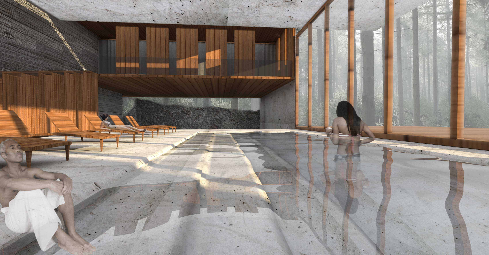
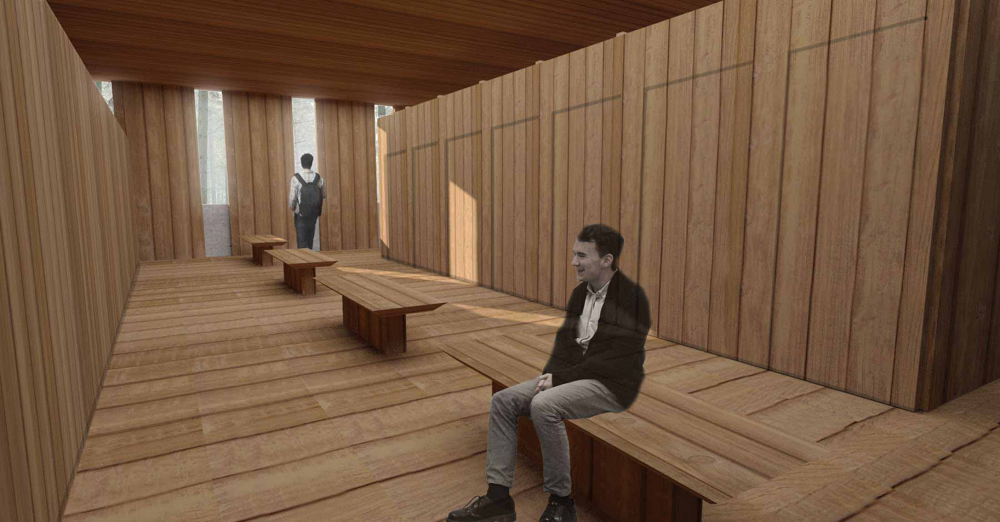
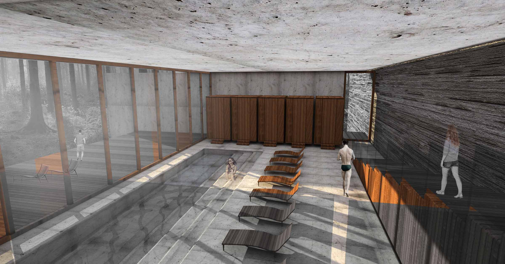
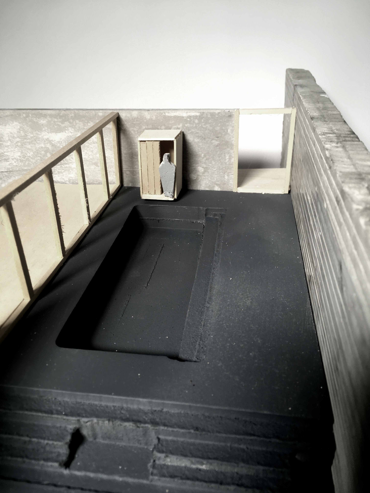
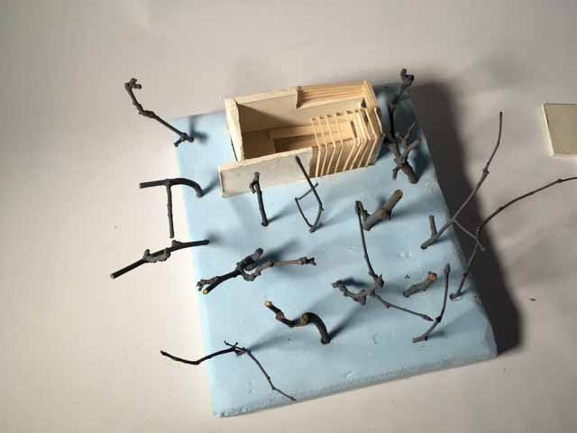

RESUME
SACO LAKE BATHHOUSE | 6 WEEKS | SPRING 2017 |
While the
architectural implementations and cultural significance of
public baths and spas have shifted over time, the
therapeutic benefits and primitive connection to the
natural world remain. Building upon this rich heritage, I
developed an architectural proposal for a Wellness
Center to compliment the Appalachian Mountain Club
(AMC) Highland Center Lodge located in the rugged and
majestic white mountains of New Hampshire. The AMC
seeks to expand their resources to include a facility that
offers physical and mental respite through the healing
properties of water. The project references ancient
traditions that utilize water of various temperatures and states to rejuvenate and heal. Of particular importance
are the various environmental conditions necessary for
the functionality of the facility and the architectural
potential inherent in these circumstances.
Water is central to the operation of this project and the
culture of bathhouses. It is present across the site and is
as much a material for you to consider as concrete and
wood.
Water is essential for the sustenance of all known forms
of life. It constitutes nearly 70% of the human body and
its natural presence has supported the emergence of
civilizations throughout time. Water is one of earth’s most
common substances, yet is also one of the most
mysterious. With earth, air, and fire, it constituted one of
the four classic elements. Together, these served as the
basis of all known natural things. The ability of water to
change states from solid to liquid to gas and capacity to
shape the surface of the earth over millennia, have placed
this substance at the center of cultures throughout time
and across the globe. Most major religions reference the
symbolic and actual purifying capacity of water and since
the ancient Greeks, the therapeutic and healing qualities
of temperate bathing have been central to daily life.
Selecting materials, structural systems and types of
construction involves a complex set of considerations
that are motivated by a host of issues from form to
economics to aesthetics. This negotiation is a
fundamental component of the design process and is
critical to the successful realization of any built work.

SECTION

WARM POOL RENDERING

PLAN

CHANGING SPACES

CONCEPTUAL AXONOMETRIC

WARM POOL

HOT AND COLD POOLS

LANDSCAPE SECTION

COLLAGE

COLLAGE

MODEL

MODEL

MODEL

MODEL
made with html and css
copyright harshvardhan kedia 2016